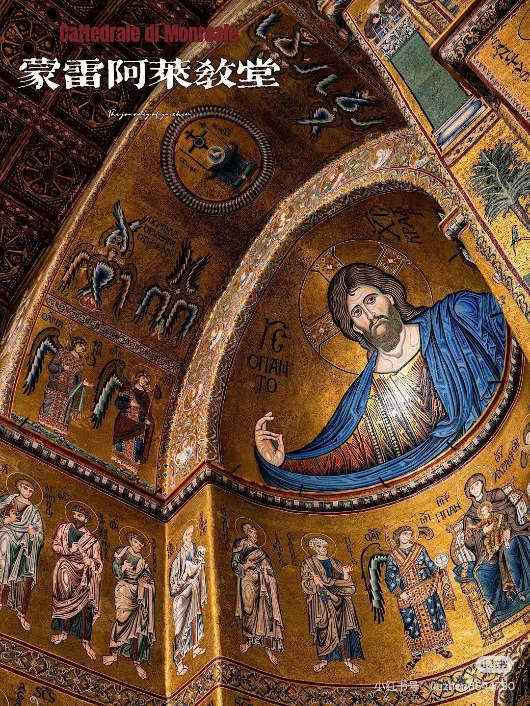
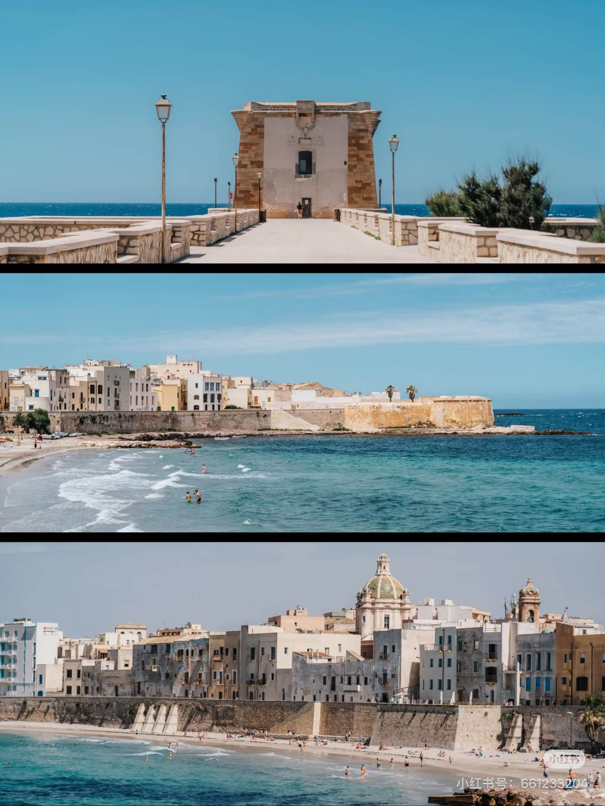
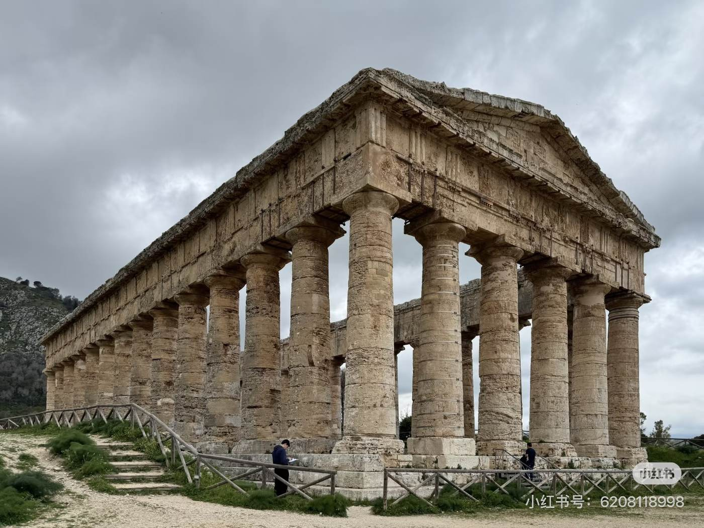
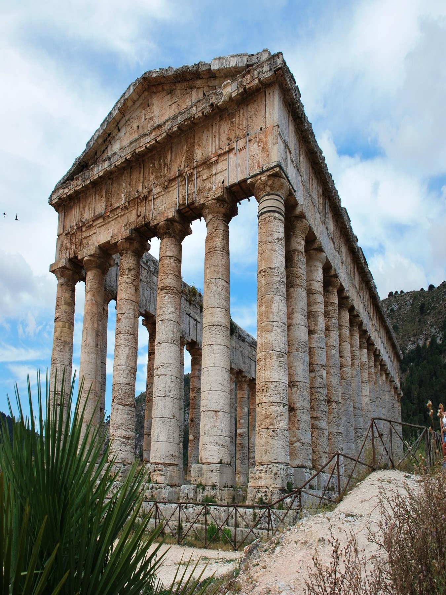
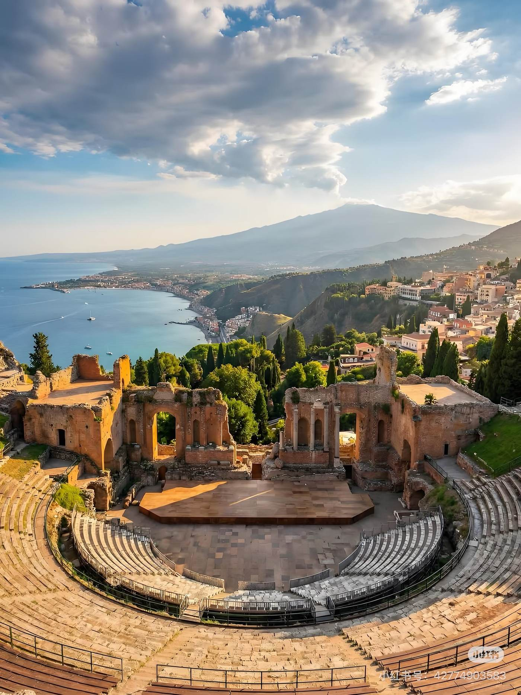
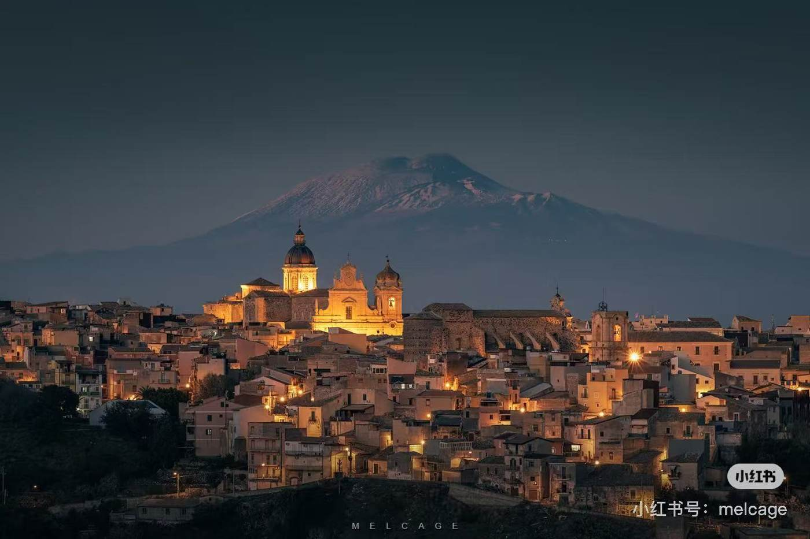

7日包车之旅 ｜ 解锁地中海的阳光与浪漫
五月的西西里岛，正值春末夏初，山城与海岸被金色阳光点亮。传说中诺曼国王的宫殿如今依旧闪耀着马赛克的光芒——蒙雷阿莱大教堂拥有超过6000平方米的华丽马赛克装饰。巴勒莫老市集的叫卖声、香料味与甜品交织出阿拉伯‑诺曼文化的烟火气，Ballarò市场作为城市最古老而热闹的市场，以多彩的农产品和海鲜闻名。驱车向西，特拉帕尼盐田的风车与夕阳在平静的盐池上投下长长的影子。山顶的塞杰斯塔神庙静静矗立，希腊柱廊在风中仿佛诉说着古代的故事。跨过北部海岸来到卡塔尼亚，黑色的熔岩石雕塑着巴洛克建筑，象征城市的黑色大象喷泉由巴萨尔特石打造并饰有埃及式方尖碑。最后的东南线路，在诺托和莫迪卡体验1693年后重建的巴洛克城镇和独特的传统巧克力。在一周的行程中，你将看到地中海光线在石墙上的变化、品尝古老阿拉伯传来的granita、闻到橙花的香气，也将在火山黑土地上留下足迹。






| 日期 | 路线 | 关键停留点 | 住宿 | 预计行程 |
|---|---|---|---|---|
| D15/2 | 巴勒莫机场 → 特拉帕尼 | 埃里切山城 特拉帕尼老城轻逛 盐田自然保护区赏日落 | 特拉帕尼 Phi Hotel La Tonnara di Bonagia |
约 1.5h（Palermo→Trapani） 上埃里切包车或缆车约20min 盐田在特拉帕尼以南约15min |
| D25/3 | 特拉帕尼 → 巴勒莫市区 | 塞杰斯塔考古公园 蒙雷阿莱主教座堂及回廊 巴勒莫大剧院 海边日落 | 巴勒莫 Mercure Palermo Centro |
约 1.5h（Trapani→Palermo） 途经塞杰斯塔约+40min |
| D35/4 | 巴勒莫 → 切法卢 | 巴勒莫早市 & 诺曼王宫 切法卢海滨 | 切法卢 Al Pescatore Hotel |
约 1h20min（Palermo→Cefalù） |
| D45/5 | 切法卢 → 卡塔尼亚 | 切法卢大教堂 & 海滨 夜间火山石巴洛克夜色 | 卡塔尼亚 B&B Doralice / San Giuliano Palace |
约 2h（Cefalù→Catania） |
| D55/6 💍 婚礼日 |
卡塔尼亚 | 全天参加婚礼 婚礼前后意式咖啡与夜宵 | 卡塔尼亚 B&B Doralice / San Giuliano Palace |
—— |
| D65/7 | 卡塔尼亚 → A线 / B线 |
百年鱼市场
A线 陶尔米纳古希腊剧场 伊索拉贝拉追海豚 B线 埃特纳火山徒步 酒庄品酒 |
卡塔尼亚 B&B Doralice / San Giuliano Palace |
A 约1h（→Taormina）+1h回城 B 上山约1h 徒步视线路2–4h |
| D75/8 | 卡塔尼亚 → 诺托 → 莫迪卡 → 卡塔尼亚 | 诺托巴洛克街区 莫迪卡巧克力老城 返回卡塔尼亚 | 卡塔尼亚 | 约 3h30min Catania→Noto 1h20 Noto→Modica 40min 返程 1h30 |
7天 · 4城 · 2条精选分线 · 1场婚礼 💍
抵达巴勒莫机场后，包车先上山前往埃里切（Erice）——一座被薄雾笼罩的中世纪山城。石板小巷、古堡遗迹和随处可见的海岸俯瞰，是西西里最有氛围的地方之一。山上比山下冷3-5°C，带件薄外套。
下午下山到特拉帕尼，老城不大，鱼市、教堂和海边步道慢慢逛就好。
傍晚去盐田自然保护区（Saline di Trapani e Paceco）看日落。白色的盐堆、荷兰式风车和波光粼粼的蒸发池，五月黄昏的光线刚刚好。今晚住在海边，酒店前身是历史上著名的金枪鱼捕捞场（Tonnara di Bonagia），推开窗便是地中海。
早上出发，先去塞杰斯塔（Segesta）考古公园。一座从未完工的多立克神庙矗立在荒野山丘上，周围没有现代建筑，安静得像是公元前5世纪。山顶还有一座古希腊剧场，俯瞰整个山谷。建议提前在线购票（约€16）。
继续包车约40分钟到蒙雷阿莱（Monreale），看主教座堂和回廊。这座12世纪的建筑融合了诺曼、拜占庭和阿拉伯三种风格，教堂内壁超过6,000平方米的金色马赛克确实令人震撼。
下午进入巴勒莫市区。傍晚在大剧院（Teatro Massimo）前广场坐坐，然后去海边看日落。
上午在巴勒莫逛早市（Ballarò 或 Vucciria），感受这座城市最鲜活的一面——水果摊、海鲜、小贩的叫卖声和咖啡香。
然后去诺曼王宫（Palazzo dei Normanni）和帕拉蒂纳礼拜堂（Cappella Palatina），金色马赛克、拜占庭穹顶和诺曼建筑融在一起，是巴勒莫最值得看的一间屋子。
下午包车约1.5小时沿北海岸前往切法卢。傍晚在沙滩散步，远眺山顶 La Rocca 古堡，享受海风。今晚入住 Al Pescatore Hotel，枕着海浪声入睡。
上午在切法卢大教堂看马赛克圣像，然后去老城巷弄里闲逛——陶瓷店和手工冰淇淋店是消磨时间的最好理由。
午后包车约2小时前往卡塔尼亚。一路沿着北海岸，窗外从沙滩渐变为橄榄林和火山丘陵，到的时候正好赶上黄昏。
晚上的卡塔尼亚属于火山石巴洛克：Via Etnea 大街灯火通明，Piazza del Duomo 的大象喷泉在灯光下很漂亮。卡塔尼亚的建筑大量以埃特纳火山熔岩石（basalto lavico）建成，夜晚灯光打在黑色火山石立面上，明暗对比极为戏剧，沿 Via Crociferi 走一段，两侧巴洛克教堂连续登场，是这座城市最值得夜间漫步的一条街。晚餐可以体验一下本地特有的 apericena（餐前酒配自助小食，花一杯酒的钱吃到半饱），推荐 Via Etnea 沿线的 bar。
💡 夜间出行建议结伴同行，注意随身物品。
Chiesa della Badia di Sant'Agata — 紧邻大教堂，可以登上穹顶俯瞰整个卡塔尼亚和远处的埃特纳火山，视野极佳。如果时间只够多去一个地方，就选这里。
今天是特别的一天！全天参加婚礼仪式与庆典。
婚礼前后如果有空闲，可以在卡塔尼亚市区走走——Piazza Università 附近的咖啡店不错，Via Crociferi 的巴洛克教堂群也值得一看。
晚上和来自世界各地的朋友们一起庆祝。这大概是一周里最开心的夜晚。
早上可以去卡塔尼亚百年鱼市场（La Pescheria）逛一圈。这个运转了几百年的露天市场是西西里最有烟火气的地方——堆成山的金枪鱼、叫卖声和海腥味，热闹得很。
早上 10:00 从卡塔尼亚出发，先到伊索拉贝拉（Isola Bella），坐玻璃底船出海追海豚——五月正是海豚活跃的季节。
13:30 上岸后在海边餐厅享用午餐，下午前往陶尔米纳（Taormina），看古希腊剧场。建在悬崖上的剧院，背后是伊奥尼亚海和远处的埃特纳火山，是全西西里最漂亮的一处景点。
古希腊剧场门票约€10；玻璃底船追海豚约€25-35/人，建议提前预约
包车约1小时到Rifugio Sapienza（海拔1900m），埃特纳火山南坡的登山起点。轻松环线可以看最近的火山口和熔岩地貌，体力好的可以走更远的线路。黑色火山渣和远处蓝色海岸线的对比，像是到了另一个星球。
下山后去山腰的酒庄品酒——火山岩土壤种出来的 Nerello Mascalese 是西西里最有特色的红酒，配火山日落，刚刚好。
夏季游人众多，建议提前购票；注意防晒、穿登山鞋，山顶风大建议带轻羽绒服或冲锋衣；酒庄建议提前预约
最后一天，包车前往东南方的巴洛克双子城。
先到诺托（Noto）。这座因1693年大地震后重建的小城是世界遗产"晚期巴洛克城镇群"的代表。蜂蜜色的石灰岩建筑沿山坡排列，大教堂前的阶梯是最标志性的画面。
然后去莫迪卡（Modica）。这座建在峡谷两侧的山城以阿兹特克式巧克力闻名——Antica Dolceria Bonajuto 是百年老店，不加糖、不加可可脂的传统配方，吃起来是一种很特别的体验。到了莫迪卡别忘了坐一下巴洛克小火车（Trenino Turistico），环游老城一圈，沿着蜿蜒的街巷缓缓爬升，峡谷、教堂和蜂蜜色建筑尽收眼底。
傍晚返回卡塔尼亚，结束这一场阳光与盐交织的西西里之旅。希望这片地中海岛屿的温暖与浪漫，会在你心中留下长久的余味。